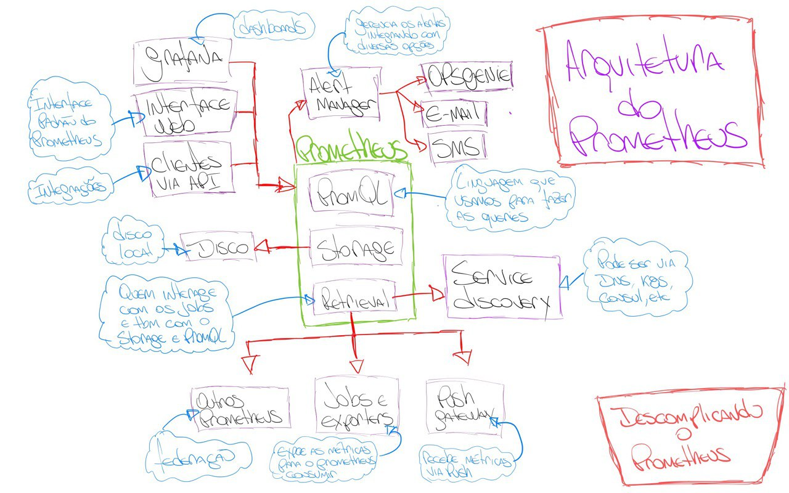
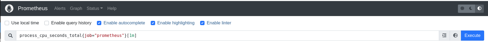
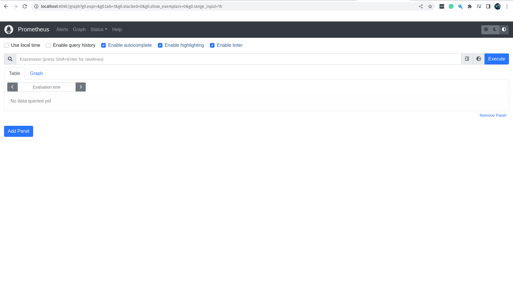

Descomplicando o Prometheus - O Treinamento
DAY-1
O que iremos ver hoje?
Durante o dia de hoje, nós iremos focar em o que é o Prometheus e qual problema ele resolve. Iremos entender os diferentes tipos de monitoramento e as diferenças entre eles. Hoje é dia de conhecer a história do Prometheus e também a motivação para a sua criação lá na SoundCloud. Vamos entender a arquitetura do Prometheus e como ele se relaciona com outros aplicativos. E por fim, vamos instalar o Prometheus e fazer a nossa primeira configuração para o nosso mais novo serviço de monitoração. Teremos ainda o nosso primeiro contato com a interface web do Prometheus e vamos criar a nossa primeira query.
Conteúdo do Day-1
DAY-1
Por que precisamos de ferramentas como o Prometheus?
Sei que ainda não falamos sobre o que é monitoramento em si, mas acho importante trazer esse cenário para que você entenda depois o que é e para que serve o Prometheus e essa tal de monitoração.
Bem, como você sabe toda empresa possui um ambiente, onde uma ou mais aplicações estão em execução consumindo algum recurso computacional, seja local, em algum datacenter ou ainda em algum cloud provider, o que é mais comum hoje em dia.
Vamos imaginar que temos um loja online, o famoso e-commerce. Você consegue imaginar a quantidade componentes que temos que monitorar para ter a certeza, ou quase, de que tudo está funcionando como o esperado?
No caso do e-commerce, vamos imaginar algo bem simples e pequeno. Para ter um loja online você precisa de um servidor web, vamos pegar o Nginx. Mas para rodar o Nginx nós vamos precisar de uma VM, container, Pod ou uma instancia no cloud, logo já temos mais coisas para nos preocupar.
Vamos imaginar que escolhemos rodar o Nginx em uma VM, somente para simplificar as coisas por enquanto. Se temos a VM, temos um hypervisor que está gerenciando a VM, temos o host onde a VM está sendo executada, temos o Linux que está instalado na VM onde o Nginx está rodando. Sem contar todos os elementos de redes envolvidos durante as requisições a essa nossa loja.
Com isso você já consegue imaginar o tamanho da encrenca, e olha que estamos falando de uma loja simples rodando em uma VM, sem se preocupar com ambientes complexos em alta disponibilidade, resilientes e que devem seguir normas para se adequarem a determinados nichos de mercado ou legislação local.
Se a gente parar para pensar somente nos itens que temos que monitorar somente no host que está hospedando essa VM já seria uma lista bem grande, e com bastante trabalho para os próximos dias.
Definitivamente o que não faltam são coisas que precisamos monitorar em nosso ambiente.
Se começar a pensar bem, vai ver que a monitoração é muito importante para as coisas do nosso dia-a-dia, onde não tem relação com o nosso trabalho. Por exemplo, agora enquanto escrevo esse material estou acompanhando o vôo de volta para o Brasil da minha Mãe e da minha sogra, tudo isso graças a algum sistema de monitoramento, que me traz esse informação em tempo real.
Perceba que monitoramento não é somente necessário para quando as coisas dão problema, o monitoramento é importante para acompanhar padrão, para entender como os seus sistemas estão operando, para acompanhar determinada atividade, como é o meu caso agora acompanhando o vôo.
Para nós profissionais de tecnologia, é fundamental ter um bom entendimento sobre a importância e como implementar um bom sistema de monitoramento para nossos serviços e sistemas. Somente através do monitoramento vamos conseguir ter confiabilidade e eficiência em nossos serviços, trazendo muito valor ao negócio por conta da eficiência e disponibilidade de nossos sistemas.
Através da monitoração iremos entender se o nosso serviço está totalmente operacional ou se está degradado, entregando uma péssima experiência para os nossos usuários.
O que é monitorar?
No meu entendimento, monitorar significa ter o status atual sobre o item desejado. No caso de uma máquina física rodando Linux, eu quero monitorar o hardware para ter certeza de que problemas de aquecimento de CPU não irão atrapalhar a disponibilidade do meu sistema. Ainda usando esse exemplo, temos que monitorar o sistema operacional, pois não queremos que um disco cheio ou uma placa de rede sobrecarregada onerando o sistema inteiro. Isso que ainda nem falamos do sistema operacional da VM e nem da própria aplicação, o Nginx.
Monitorar é você saber o que está acontecendo em sua infra, em sua app, em seu serviço em tempo real e em caso de falha ou anomalia, que as pessoas envolvidas para a recuperação daquele componente sejam notificadas com o máximo de informação para auxiliar o troubleshooting.
O monitoramento e a observabilidade
Agora que você já sabe o que significa monitorar (pelo menos no meu ponto de vista), acho que já podemos trazer um pouco mais de tempero nessa conversa, digo, trazer mais recursos para conseguir monitorar ainda melhor o nosso ambiente.
Usando ainda o exemplo do Nginx rodando em uma VM Linux, nós estávamos falando sobre possíveis eventos sobre falhas hardware ou coletando métricas sobre a carga de informações trafegando em nossa placa de rede, agora imagina descer um pouco mais o nível e poder medir o tempo de cada requisição que nosso servidor web está tratando?
Imagina ainda receber e armazenar todos os logs das requisições que retornaram erro para o nosso usuário ou que contenham informações sobre o desempenho de nossa aplicação?
Ou ainda, imagina fazer todo o acompanhamento da requisição do usuário, desde o momento que ela chegou no primeiro serviço de nossa infra, até o último milésimo de vida daquela requisição após ela passear por diversos serviços de nosso ambiente e ainda podendo entender e visualizar métricas internas sobre o comportamento e o consumo de recursos por sua aplicação?
E agora o melhor, imagine reunir toda essa informação e poder correlaciona-las, e ainda, visualizar essas informações de maneira gráfica, através de bonitos e informativos dashboards com gráficos e tabelas dos mais variados tipos?
Imaginou?
Pronto, você foi capaz de imaginar um ambiente onde seria possível ter a observabilidade em sua melhor forma!
Observability normalmente é apoiada principalmente em 3 pilares:
- Logs
- Metrics
- Traces
Eu adiciono mais um item nessa lista, o Eventos. Ter os eventos que ocorrem em seu ambiente e correlaciona-lo com os demais pilares é sensacional demais e ajuda muito a entender o comportamento de um item no momento de um problema ou degradação do serviço. Então eu vou atualizar essa lista e adiciona-lo. :D
- Logs
- Métricas
- Traces
- Eventos
E para ser sincero, eu ainda adicionaria Dashboards pois acho que é fundamental ver de modo mais visual possível o resultado dos 4 pilares correlacionados através de gráficos que irão ajudar a entender o comportamento de determinado item em seu momento de falha ou degradação.
Se você possui um sistema para observar o seu ambiente que cobre esses 4 pilares, parabéns! \o/
Nos exemplos que eu listei acima e pedi para você imaginar, você pode verificar que temos exemplos para os quatro pilares da observabilidade. Volta lá e confere!
Eu estava certo, né? haha
Ok, eu sei que você já entendeu tudo isso e agora está se perguntado:
E o que o Prometheus tem haver com tudo isso?
E eu te explico logo abaixo: :D
O que é o Prometheus?
O Prometheus é um dos mais modernos sistemas de monitoramento, capas de coletar e guardar métricas dos mais variados componentes de suas infra-estrutura. O inicio de seu desenvolvimento se deu em 2012, porém somente foi anunciado oficialmente pela SoundCloud em 2015. Ele foi inspirado no Borgmon, plataforma de monitoramento no Google, responsável por monitor o Borg, plataforma de gerenciamento de containers do Google e conhecido também por ser o pai do Kubernetes.
O Prometheus além de ser uma ótima ferramenta para coletar métricas, ele também é capaz de armazena-las em seu próprio TSDB. Sim, ele também é um time series database!
Eu não traduzi o time series database por que acho estranho falar banco de dados temporais, apesar de ser o certo em português. haha
Quando falamos de time series database, estamos basicamente falando sobre um banco de dados construindo para ter uma excelente performance no armazenamento e leitura de dados que são armazenados com data e hora. Sendo assim é um banco de dados projetado para lidar muito bem com dados, como por exemplo as métricas, onde é importante a data e hora. Seja na leitura e resgate de um minuto especifico durante o dia ou então na facilidade e performance para armazenar e organizar milhares, ou até milhões, de mensagens por hora.
É possível ainda realizar riquíssimas queries para buscar a melhor correlação de métricas e visualizar através de dashboards, em sua bonita e intuitiva interface. Nós vamos falar muito mais sobre isso no decorrer do treinamento.
E antes que eu me esqueça, quando falamos em observabilidade, o Prometheus se encaixa no pilar Métricas, pois ele tem como função coletar e armazenar métricas de diferentes componentes em suas infra-estrutura. E para não falar que eu não falei sobre opções de ferramentas para as outras pilastras, segue:
- Logs -> Graylog ou Datadog
- Métricas -> Prometheus
- Traces -> Jaeger ou eBPF
- Eventos -> Zabbix ou Datadog
- Visualização/Dashboards -> Grafana, Datadog ou Pixie
Pronto, agora acho que já sabemos o que é monitoração, observabilidade e o Prometheus, acho que já podemos começar a aprofundar o nosso conhecimento nessa sensacional ferramenta, o Prometheus!
A arquitetura do Prometheus
Fiz um desenho da arquitetura do Prometheus para que possamos ter um melhor entendimento de como ele funciona.

Perceba que temos 03 componentes core no Prometheus:
- Retrieval
- Storage
- PromQL
O Retrieval é o responsável por coletar as métricas e conversar com o Storage para armazená-las. É o Retrieval também o responsável por conversar com o Service Discovery para encontrar os serviços que estão disponíveis para coletar métricas.
Já o Storage é o responsável por armazenar as métricas no TSDB, lembre-se que o TSDB é um time series database, super importante para otimizar a performance de coleta e leitura das métricas. Importante lembrar que o Storage armazena as métricas no disco local do node que ele está sendo executado. Com isso, caso você esteja com o Prometheus instalado em uma VM, os dados serão armazenados no disco local da VM.
O PromQL é o responsável por executar as queries do usuário. Ele é o responsável por conversar com o Storage para buscar as métricas que o usuário deseja. O PromQL é uma riquíssima linguagem de consulta, ela não é parecida com outras linguagens de consulta como o SQL, por exemplo.
Durante o treinamento nós teremos diversos exemplos de como construir queries para o PromQL e como o PromQL pode nos ajudar a obter as métricas que precisamos.
Mas somente para dar um gostinho do que vem pela frente, veja um pequeno exemplo de como o PromQL funciona:
query = 'avg(rate(container_cpu_usage_seconds_total{container_name!="meu-nginx",image!="nginx"}[5m]))'
Nesse exemplo, o PromQL está buscando a média da taxa de uso de CPU de todos os containers que não tenham o nome "meu-nginx" e que não estejam utilizando a imagem de container "nginx".
Perceba que um fator super importante no ecossistema do Prometheus é a quantidade e a facilidade de integra-lo com outras ferramentas, como o Grafana, Alertmanager, Zabbix e por aí vai.
Instalando o Prometheus
Agora que já sabemos o que é monitoração, observabilidade e o Prometheus, acho que já é o momento de começar a brincar com a estrela desse treinamento, o Prometheus!
É possível realizar a instalação do Prometheus de diversas maneiras. Podemos utilizar uma VM, instancia em algum cloud provider, ou mesmo instalar o Prometheus em um servidor físico local. Mas é claro que é possível ter o Prometheus rodando em containers, seja em sua máquina local utilizando Docker ou outro container runtime. Agora se o objetivo é ter o Prometheus rodando em ambiente produtivo é necessário utilizar um orquestrador de containers, como o Kubernetes ou Nomad.
Vamos começar a instalar o Prometheus em uma máquina Linux. Está máquina Linux poderia ser facilmente uma VM, instancia em algum cloud provider, ou mesmo um servidor físico local.
Essa é a nossa primeira instalação do Prometheus, fique tranquilo que no decorrer do treinamento vamos utilizar outras formas, visando passar todo o conhecimento para que você se sinta seguro em utilizar o Prometheus no seu ambiente. E Lembre-se, o nosso foco é ter um treinamento que se aproxima o máximo possível do que seria em seu ambiente de trabalho.
Executando o Prometheus em um node Linux
Uma coisa muito importante é estar familiarizado com o site do Prometheus, pois é de lá que vamos aprender todos os detalhes do Prometheus através da documentação, além de acompanhar outros detalhes e novidades do projeto.
Você pode acessar o site do Prometheus em: https://prometheus.io/
Você pode acessar a seção de Download do site do Prometheus em: https://prometheus.io/download/
Para fazer a execução do Prometheus no Linux de uma maneira que irá funcionar na maioria das distribuições, vamos fazer da seguinte forma:
Primeiro vamos fazer o download do binário do Prometheus, lembrando que existem binários para Linux, Windows e MacOS.
Na verdade, vamos fazer o download dos binários, pois dentro do pacote .tar.gz, existem dois binários, o binário do Prometheus e o binário do Promtool.
O Promtool é um utilitário super legal que permite que você execute queries no Prometheus via linha de comando, ou seja, você pode executar queries no Prometheus através do terminal.
Já o binário do Prometheus é o Prometheus Server e que faz toda a mágica acontecer.
Ainda existe o diretório consoles, console_libraries e o arquivo prometheus.yml, que é o arquivo de configuração do Prometheus.
Bom, já sabemos de todos os detalhes, bora começar!
Fazendo o download:
curl -LO https://github.com/prometheus/prometheus/releases/download/v2.38.0/prometheus-2.38.0.linux-amd64.tar.gz
Após o download, vamos extrair o arquivo e acessar o diretório extraído.
tar -xvf prometheus-2.38.0.linux-amd64.tar.gz
cd prometheus-2.38.0.linux-amd64
Como mencionado anteriormente, o arquivo prometheus.yml é o arquivo de configuração do Prometheus e será ele que iremos utilizar para configurar o Prometheus nesse nosso primeiro exemplo.
Vamos ver o conteúdo do arquivo:
# my global config
global:
scrape_interval: 15s # Set the scrape interval to every 15 seconds. Default is every 1 minute.
evaluation_interval: 15s # Evaluate rules every 15 seconds. The default is every 1 minute.
# scrape_timeout is set to the global default (10s).
# Alertmanager configuration
alerting:
alertmanagers:
- static_configs:
- targets:
# - alertmanager:9093
# Load rules once and periodically evaluate them according to the global 'evaluation_interval'.
rule_files:
# - "first_rules.yml"
# - "second_rules.yml"
# A scrape configuration containing exactly one endpoint to scrape:
# Here it's Prometheus itself.
scrape_configs:
# The job name is added as a label `job=<job_name>` to any timeseries scraped from this config.
- job_name: "prometheus"
# metrics_path defaults to '/metrics'
# scheme defaults to 'http'.
static_configs:
- targets: ["localhost:9090"]
Vamos tirar alguns comentários e remover os campos que não iremos utilizar por agora.
global: # Configurações globais do Prometheus, ou seja, configurações que serão utilizadas em todos os jobs caso não sejam configuradas separadamente dentro de cada job.
scrape_interval: 15s # Intervalo de coleta dos dados, ou seja, a cada 15 segundos o Prometheus vai até o alvo monitorado coletar as métricas, o padrão é 1 minuto.
evaluation_interval: 15s # Intervalo para o Prometheus avaliar as regras de alerta, o padrão é 1 minuto. Não estamos utilizando regras para os alertas, vamos manter aqui somente para referência.
scrape_timeout: 10s # Intervalos para o Prometheus aguardar o alvo monitorado responder antes de considerar que o alvo está indisponível, o padrão é 10 segundos.
rule_files: # Inicio da definição das regras de alerta, nesse primeiro exemplo vamos deixar sem regras, pois não iremos utilizar alertas por agora.
scrape_configs: # Inicio da definição das configurações de coleta, ou seja, como o Prometheus vai coletar as métricas e onde ele vai encontrar essas métricas.
- job_name: "prometheus" # Nome do job, ou seja, o nome do serviço que o Prometheus vai monitorar.
static_configs: # Inicio da definição das configurações estáticas, ou seja, configurações que não serão alteradas durante o processo de coleta.
- targets: ["localhost:9090"] # Endereço do alvo monitorado, ou seja, o endereço do serviço que o Prometheus vai monitorar. Nesse caso é o próprio Prometheus.
Eu tirei a parte referente ao AlertManager, pois não iremos utilizar ele neste momento para deixar as coisas mais simples e darmos o nosso primeiro passo.
Para saber o que cada linha significa, eu adicionei um comentário em cada uma delas explicando o que ela faz.
Agora que já deixamos o arquivo da forma como queremos e já sabemos cada detalhe, vamos executar o binário do Prometheus.
./prometheus
ts=2022-08-17T13:08:21.924Z caller=main.go:495 level=info msg="No time or size retention was set so using the default time retention" duration=15d
ts=2022-08-17T13:08:21.924Z caller=main.go:539 level=info msg="Starting Prometheus Server" mode=server version="(version=2.38.0, branch=HEAD, revision=818d6e60888b2a3ea363aee8a9828c7bafd73699)"
ts=2022-08-17T13:08:21.924Z caller=main.go:544 level=info build_context="(go=go1.18.5, user=root@e6b781f65453, date=20220816-13:23:14)"
ts=2022-08-17T13:08:21.924Z caller=main.go:545 level=info host_details="(Linux 5.18.10-76051810-generic #202207071639~1659403207~22.04~cb5f582 SMP PREEMPT_DYNAMIC Tue A x86_64 nu-derval (none))"
ts=2022-08-17T13:08:21.924Z caller=main.go:546 level=info fd_limits="(soft=1024, hard=1048576)"
ts=2022-08-17T13:08:21.924Z caller=main.go:547 level=info vm_limits="(soft=unlimited, hard=unlimited)"
ts=2022-08-17T13:08:21.926Z caller=web.go:553 level=info component=web msg="Start listening for connections" address=0.0.0.0:9090
ts=2022-08-17T13:08:21.926Z caller=main.go:976 level=info msg="Starting TSDB ..."
ts=2022-08-17T13:08:21.927Z caller=tls_config.go:195 level=info component=web msg="TLS is disabled." http2=false
ts=2022-08-17T13:08:21.928Z caller=head.go:495 level=info component=tsdb msg="Replaying on-disk memory mappable chunks if any"
ts=2022-08-17T13:08:21.928Z caller=head.go:538 level=info component=tsdb msg="On-disk memory mappable chunks replay completed" duration=1.773µs
ts=2022-08-17T13:08:21.928Z caller=head.go:544 level=info component=tsdb msg="Replaying WAL, this may take a while"
ts=2022-08-17T13:08:21.928Z caller=head.go:615 level=info component=tsdb msg="WAL segment loaded" segment=0 maxSegment=0
ts=2022-08-17T13:08:21.928Z caller=head.go:621 level=info component=tsdb msg="WAL replay completed" checkpoint_replay_duration=9.788µs wal_replay_duration=213.05µs total_replay_duration=237.767µs
ts=2022-08-17T13:08:21.928Z caller=main.go:997 level=info fs_type=XFS_SUPER_MAGIC
ts=2022-08-17T13:08:21.929Z caller=main.go:1000 level=info msg="TSDB started"
ts=2022-08-17T13:08:21.929Z caller=main.go:1181 level=info msg="Loading configuration file" filename=prometheus.yml
ts=2022-08-17T13:08:21.931Z caller=main.go:1218 level=info msg="Completed loading of configuration file" filename=prometheus.yml totalDuration=2.070216ms db_storage=531ns remote_storage=1.002µs web_handler=220ns query_engine=420ns scrape=1.716011ms scrape_sd=201.818µs notify=1.222µs notify_sd=4.198µs rules=1.473µs tracing=8.426µs
ts=2022-08-17T13:08:21.931Z caller=main.go:961 level=info msg="Server is ready to receive web requests."
ts=2022-08-17T13:08:21.931Z caller=manager.go:941 level=info component="rule manager" msg="Starting rule manager..."
Através da linha abaixo podemos ver que o prometheus está rodando.
ts=2022-08-17T13:08:21.931Z caller=main.go:961 level=info msg="Server is ready to receive web requests."
Evidentemente, estamos utilizando o Prometheus dessa forma apenas para testes e para que possamos dar os primeiros passos em nosso treinamento.
Se você pressionar CTRL+C, o Prometheus irá ser finalizado.
Caso você queira executar o Prometheus e deixar o seu terminal livre e independente do processo do Prometheus, você pode fazer isso através do comando abaixo.
nohup ./prometheus &
Assim ele irá rodar em segundo plano e não será interrompido caso você feche o terminal.
Mas lembre-se novamente, estamos fazendo isso somente para dar os primeiros passos, não vá colocar isso em ambiente de produção, e ainda dizer que aprendeu comigo, seria muita mancada. hahaha
Para verificar se o processo está em execução, basta fazer o seguinte:
ps -ef | grep prometheus
jeferson 23539 6584 0 16:20 pts/0 00:00:00 ./prometheus
Vamos deixar o terminal de lado por um segundo, e bora acessar a interface web do Prometheus usando o nosso navegador.
O Prometheus roda por padrão na porta TCP 9090, portanto vamos acessar a interface web através do seguinte endereço:
http://localhost:9090
A tela que você vê é a seguinte, correto?
Nós vamos brincar bastante nessa interface e iremos conhecer cada pixel dela, porém por agora vamos apenas testar uma query super simples, somente para dar um gostinho de como funciona.
Na barra de criação de queries, vamos escrever a query que queremos testar.
process_cpu_seconds_total{job="prometheus"}[1m]

Nessa query, estamos pegando os valores da métrica process_cpu_seconds_total, que é a métrica que nos informa o tempo de CPU gasto por cada processo, filtrando apenas pelos jobs que tem o nome prometheus e estamos pegando somente os valores do último minuto.
Você lembra que definimos no arquivo de configuração do Prometheus o parâmetro scrape_interval para que ele coletasse os dados a cada 15 segundos?
Eu espero que sim! :D
Então, se tudo está correndo bem você terá como resultado da query acima 4 valores, afinal estamos pegando os valores do último minuto.

Muito bem, já demos o primeiro passo para o nosso treinamento, já conhecemos a cara do Prometheus e inclusive fizemos a nossa primeira query.
Agora vamos ver uma instalação da maneira correta em uma máquina Linux. Ainda vamos utilizar a configuração básica do Prometheus, mas iremos cuidar dos binários e do serviço do Prometheus da maneira correta. :D
Instalação do Prometheus no Linux
Vamos fazer a instalação em uma máquina Linux rodando a distribuição Ubuntu, mas lembre-se que é possível fazer isso em qualquer outra distribuição.
Primeiro vamos fazer o download do binário do Prometheus, lembrando que existem binários para Linux, Windows e MacOS.
Na verdade, vamos fazer o download dos binários, pois dentro do pacote .tar.gz, existem dois binários, o binário do Prometheus e o binário do Promtool.
O Promtool é um utilitário super legal que permite que você execute queries no Prometheus via linha de comando, ou seja, você pode executar queries no Prometheus através do terminal.
Já o binário do Prometheus é o Prometheus Server e que faz toda a mágica acontecer.
Ainda existe o diretório consoles, console_libraries e o arquivo prometheus.yml, que é o arquivo de configuração do Prometheus.
Bom, já sabemos de todos os detalhes, bora começar!
Fazendo o download:
curl -LO https://github.com/prometheus/prometheus/releases/download/v2.38.0/prometheus-2.38.0.linux-amd64.tar.gz
Após o download, vamos extrair os arquivos.
tar -xvf prometheus-2.38.0.linux-amd64.tar.gz
Agora vamos mover os binários para o diretório /usr/local/bin.
sudo mv prometheus-2.38.0.linux-amd64/prometheus /usr/local/bin/prometheus
sudo mv prometheus-2.38.0.linux-amd64/promtool /usr/local/bin/promtool
Vamos ver se o binário está funcionando.
prometheus --version
prometheus, version 2.38.0 (branch: HEAD, revision: 818d6e60888b2a3ea363aee8a9828c7bafd73699)
build user: root@e6b781f65453
build date: 20220816-13:23:14
go version: go1.18.5
platform: linux/amd64
Agora vamos criar o diretório de configuração do Prometheus.
sudo mkdir /etc/prometheus
Vamos mover os diretórios consoles, console_libraries e o arquivo prometheus.yml para o diretório de configuração do Prometheus.
sudo mv prometheus-2.38.0.linux-amd64/prometheus.yml /etc/prometheus/prometheus.yml
sudo mv prometheus-2.38.0.linux-amd64/consoles /etc/prometheus
sudo mv prometheus-2.38.0.linux-amd64/console_libraries /etc/prometheus
Vamos editar o arquivo de configuração do Prometheus para deixar como fizemos em nosso primeiro exemplo.
sudo vim /etc/prometheus/prometheus.yml
Agora edite o arquivo e deixe com o seguinte conteúdo: (você pode remover os comentários para deixar mais simples o arquivo)
global: # Configurações globais do Prometheus, ou seja, configurações que serão utilizadas em todos os jobs caso não sejam configuradas separadamente dentro de cada job.
scrape_interval: 15s # Intervalo de coleta dos dados, ou seja, a cada 15 segundos o Prometheus vai até o alvo monitorado coletar as métricas, o padrão é 1 minuto.
evaluation_interval: 15s # Intervalo para o Prometheus avaliar as regras de alerta, o padrão é 1 minuto. Não estamos utilizando regras para os alertas, vamos manter aqui somente para referência.
scrape_timeout: 10s # Intervalos para o Prometheus aguardar o alvo monitorado responder antes de considerar que o alvo está indisponível, o padrão é 10 segundos.
rule_files: # Inicio da definição das regras de alerta, nesse primeiro exemplo vamos deixar sem regras, pois não iremos utilizar alertas por agora.
scrape_configs: # Inicio da definição das configurações de coleta, ou seja, como o Prometheus vai coletar as métricas e onde ele vai encontrar essas métricas.
- job_name: "prometheus" # Nome do job, ou seja, o nome do serviço que o Prometheus vai monitorar.
static_configs: # Inicio da definição das configurações estáticas, ou seja, configurações que não serão alteradas durante o processo de coleta.
- targets: ["localhost:9090"] # Endereço do alvo monitorado, ou seja, o endereço do serviço que o Prometheus vai monitorar. Nesse caso é o próprio Prometheus.
Não podemos esquecer do diretório onde o Prometheus guardará seus dados.
sudo mkdir /var/lib/prometheus
Vamos criar um grupo e um usuário para o Prometheus.
sudo addgroup --system prometheus
sudo adduser --shell /sbin/nologin --system --group prometheus
Precisamos fazer com que o Prometheus seja um serviço em nossa máquina, para isso precisamos criar o arquivo de service unit do SystemD.
sudo vim /etc/systemd/system/prometheus.service
Vou deixar o conteúdo do arquivo aqui embaixo e linha por linha comentada, somente para que você possa entender o que está rolando e aprender alguma coisa extra. :D
[Unit] # Inicio da definição do serviço.
Description=Prometheus # Descrição do serviço.
Documentation=https://prometheus.io/docs/introduction/overview/ # Documentação do serviço.
Wants=network-online.target # Para que o serviço do Prometheus seja iniciado, precisamos antes que o serviço de rede esteja ativo.
After=network-online.target # Depois que o serviço de rede esteja ativo, o serviço do Prometheus será iniciado.
[Service] # Inicio da definição do serviço.
Type=simple # Tipo do serviço, o padrão é simple, ou seja, o serviço é simples, não tem subserviços.
User=prometheus # Usuário do serviço, o padrão é prometheus, o mesmo que criamos no passo anterior.
Group=prometheus # Grupo do serviço, o padrão é prometheus, o mesmo que criamos no passo anterior.
ExecReload=/bin/kill -HUP \$MAINPID # Comando para o serviço do Prometheus ser reiniciado, o padrão é /bin/kill -HUP \$MAINPID, ou seja, o serviço do Prometheus será reiniciado ao receber um sinal de reinicialização.
ExecStart=/usr/local/bin/prometheus \ # Comando para o serviço do Prometheus ser iniciado, o padrão é /usr/local/bin/prometheus, o mesmo lugar para onde mandamos o binário do Prometheus no passo anterior.
--config.file=/etc/prometheus/prometheus.yml \ # Arquivo de configuração do serviço do Prometheus, o padrão é /etc/prometheus/prometheus.yml, o mesmo lugar onde mandamos o arquivo de configuração do Prometheus no passo anterior.
--storage.tsdb.path=/var/lib/prometheus \ # Diretório onde o serviço do Prometheus vai armazenar seus dados, o padrão é /var/lib/prometheus, o mesmo lugar onde criamos o diretório para armazenar os dados do Prometheus.
--web.console.templates=/etc/prometheus/consoles \ # Diretório onde o serviço do Prometheus vai encontrar os templates para os consoles, o padrão é /etc/prometheus/consoles, o mesmo lugar para onde movemos o diretório para armazenar os templates dos consoles.
--web.console.libraries=/etc/prometheus/console_libraries \ # Diretório onde o serviço do Prometheus vai encontrar as bibliotecas para os consoles, o padrão é /etc/prometheus/console_libraries, o mesmo lugar para onde movemos o diretório para armazenar as bibliotecas dos consoles.
--web.listen-address=0.0.0.0:9090 \ # Endereço do serviço do Prometheus, o padrão é o serviço escutar na porta 9090.
--web.external-url= # Endereço externo do serviço do Prometheus, por exemplo o endereço DNS do serviço.
SyslogIdentifier=prometheus # Identificador do serviço no syslog, o padrão é prometheus.
Restart=always # Reinicialização do serviço, o padrão é always, ou seja, o serviço será reiniciado sempre que ocorrer alguma alteração.
[Install] # Inicio da definição do instalador do serviço.
WantedBy=multi-user.target # Definir em qual grupo o serviço será iniciado, o padrão é multi-user.target.
Agora vamos adicionar o seguinte conteúdo ao arquivo de configuração do service unit do Prometheus: Eu tirei os comentários para evitar algum problema e para deixar o arquivo mais legível.
[Unit]
Description=Prometheus
Documentation=https://prometheus.io/docs/introduction/overview/
Wants=network-online.target
After=network-online.target
[Service]
Type=simple
User=prometheus
Group=prometheus
ExecReload=/bin/kill -HUP \$MAINPID
ExecStart=/usr/local/bin/prometheus \
--config.file=/etc/prometheus/prometheus.yml \
--storage.tsdb.path=/var/lib/prometheus \
--web.console.templates=/etc/prometheus/consoles \
--web.console.libraries=/etc/prometheus/console_libraries \
--web.listen-address=0.0.0.0:9090 \
--web.external-url=
SyslogIdentifier=prometheus
Restart=always
[Install]
WantedBy=multi-user.target
Se você não sabe o que é o SystemD, você pode consultar o manual do SystemD ou ainda ver o conteúdo sobre SystemD que eu já criei lá no canal da LINUXtips.
Acredito que já criamos todos os arquivos e diretórios necessários para o funcionamento do Prometheus, agora vamos mudar o dono desses diretórios e arquivos que criamos para que o usuário do prometheus seja o dono dos mesmos.
sudo chown -R prometheus:prometheus /var/log/prometheus
sudo chown -R prometheus:prometheus /etc/prometheus
sudo chown -R prometheus:prometheus /var/lib/prometheus
sudo chown -R prometheus:prometheus /usr/local/bin/prometheus
sudo chown -R prometheus:prometheus /usr/local/bin/promtool
Vamos fazer um reload no systemd para que o serviço do Prometheus seja iniciado.
sudo systemctl daemon-reload
Vamos iniciar o serviço do Prometheus.
sudo systemctl start prometheus
Temos que deixar o serviço do Prometheus configurado para que seja iniciado automaticamente ao iniciar o sistema.
sudo systemctl enable prometheus
Para garantir, vamos ver o status do serviço do Prometheus.
sudo systemctl status prometheus
Você pode verificar nos logs se tudo está rodando maravilhosamente.
sudo journalctl -u prometheus
E se você encontrar a seguinte mensagem no log, significa que o serviço do Prometheus está funcionando corretamente.
level=info msg="Server is ready to receive web requests."
E para finalizar a brincadeira, vamos acessar a nossa interface web do Prometheus através do seguinte endereço em seu navegador.
http://localhost:9090
Você verá uma tela maravilhosa como mostra a imagem abaixo.

A sua lição de casa
A sua lição de casa é estudar cada conceito que você aprendeu até o momento, e claro, vamos explorar ao máximo a interface do Prometheus. Tente brincar criando algumas queries e visualizando os resultados, além de navegar pela interface para conhecer todos os recursos do Prometheus. Nós vamos explorar e muito essa interface, afinal o nosso treinamento é criado para que você possa aprender de maneira evolutiva, um pouco a cada dia e sempre criando algo, saindo do treinamento com algo que você aprendeu executado na prática.
Desafio do Day-1
Não esqueça de realizar o desafio do Day-1, para que você possa ir para o próximo Day. O desafio consiste de perguntas e um teste prático, para que você possa aprender ainda mais e se familiarizar com o que você aprendeu. Veja na plataforma do treinamento o desafio do Day-1.
Final do Day-1
Durante o Day-1 você aprendeu o que é monitoração, qual a relação dela com observabilidade, quais os pilares da observabilidade, o que é o Prometheus e como ele funciona. Fizemos a instalação do Prometheus, entendemos sua configuração inicial, como configurar o service unit, como configurar o Prometheus através do arquivo de configuração, criamos a estrutura de arquivos e diretórios, como configurar o grupo de usuários e como configurar o usuário do serviço. Acessamos a interface do Prometheus e fizemos a nossa primeira query. Verificamos o status do serviço do Prometheus e verificamos nos logs se tudo está rodando corretamente. Entendemos a arquitetura do Prometheus e tivemos o prazer de ver o desenho feito por mim. hahaha
Agora é hora de descansar e depois rever todo o conteúdo do Day-1.